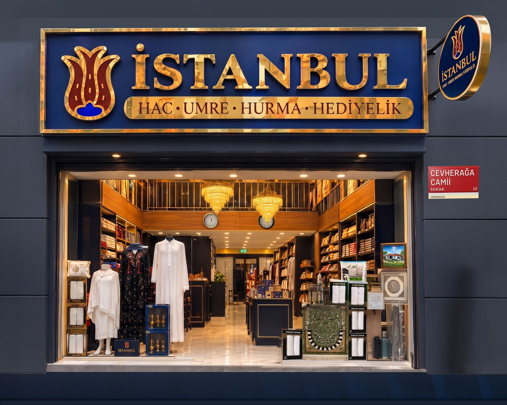

Cevherağa Camii Sokak No:10, Ümraniye
Mübarek yolculuğun
Mübarek yolculuğun
burada.
İhramdan seccadeye, hurmadan zemzeme kadar hac ve umre için gereken her şey, hediyelikleriyle birlikte tek mağazada.

Buyurun, mağazamıza girin